유희준
DevOps · Infrastructure Engineer
운영 중 생기는 문제를 끝까지 따라가 원인을 찾고 다시 생기지 않게 구조로 막는 인프라 엔지니어입니다.
EKS 기반 SaaS 전환 실무와 AWS 인프라를 혼자 설계하고 운영한 프로젝트에서 Kubernetes 운영, Terraform과 GitOps 자동화,
서비스별 권한 분리, 모니터링 구축을 경험했습니다.
Preview
핵심 내용 미리보기
옥타코와 NOVA의 주요 결과입니다. 카드를 누르면 해당 사례로 이동합니다.
Project 01 · 실무
(주)옥타코 멀티테넌트 SSO 인증 서비스
온프레미스 SSO를 AWS EKS 기반 멀티테넌트 SaaS로 전환하는 프로젝트
OCTACO · 01
서비스별 AWS 권한 분리로 탈취 피해를 한 서비스 안으로 제한
서비스마다 IAM Role 분리 Pod 통신과 DB 접속 제한 비밀 값은 중앙 저장소에서 주입
문제 발견
클러스터를 점검해 보니 서비스 하나가 탈취됐을 때 피해가 그 서비스에서 멈추지 않는 경로가 세 군데 있었습니다.
모든 Pod가 노드의 IAM Role을 공유해 한 서비스가 탈취되면 다른 서비스의 AWS 권한과 비밀 값까지 쓸 수 있었습니다 .
Pod 사이 통신이 Kubernetes 기본값대로 모두 열려 있어 한 Pod에서 다른 서비스를 바로 호출할 수 있었습니다.
RDS와 ElastiCache 접속 허용 규칙이 CIDR 기준이라 같은 대역의 어떤 리소스든 DB와 캐시에 접근할 수 있었습니다.
비밀 값도 각자 로컬에서 ConfigMap과 Secret으로 직접 만들어 한곳에서 관리되지 않았습니다 .
해결 과정
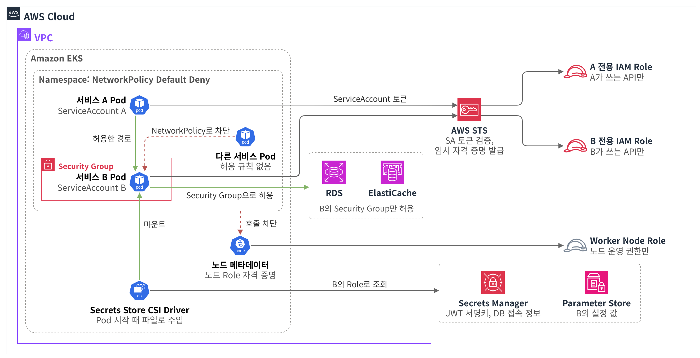
서비스마다 IAM Role을 받는 IRSA 흐름과 Pod 통신, 노드 메타데이터, DB와 캐시, 비밀 값 접근 제한
① 서비스마다 IAM Role 분리
IRSA로 서비스마다 Role을 나누고 자기 비밀 값 조회처럼 그 서비스가 실제로 쓰는 AWS API만 허용했습니다.Worker Node Role에는 노드 운영에 필요한 권한만 남겼습니다.
② Pod 통신과 DB 접속 제한
VPC CNI NetworkPolicy로 Pod의 Ingress와 Egress를 Default Deny 로 두고 필요한 경로만 열었습니다.
Egress가 기본 차단이 되면서 Pod가 노드 메타데이터에 접근해 Worker Node Role 권한을 받아 가는 우회 경로도 함께 막혔습니다 .
Security Groups for Pods로 서비스마다 Security Group을 붙이고 RDS와 ElastiCache는 그 그룹을 가진 Pod에만 접속을 허용 했습니다.
③ 비밀 값은 중앙 저장소에서 주입
JWT 서명키, DB 접속 정보, 설정 값은 Secrets Manager와 Parameter Store에 두고 Secrets Store CSI Driver로 Pod에 주입 했습니다.
검증과 결과
Pod에 접속해 직접 요청을 보내 차단되는지 확인했습니다.
시도한 요청 결과
다른 서비스의 비밀 값 조회 AccessDenied로 거절 노드 메타데이터 호출 차단 허용하지 않은 Pod로의 요청 차단 Security Group이 없는 Pod의 DB 접속 차단
비밀 값은 Secrets Manager와 Parameter Store에서만 관리해 로컬에서 Secret을 만들지 않고 배포 합니다.
OCTACO · 02
Probe와 CPU limit 조정으로 수백 번 반복되던 Pod 재시작을 0번으로 해소
Pod 재시작 수백 번에서 0번으로 20번 이상 재생성 테스트에서 Probe 실패 0건 공통 기본값과 배포 기준으로 재발 방지
문제 발견
주말 동안 Pod가 수백 번 재시작 한 것을 발견했습니다.
원인 분석
로그를 확인하니 애플리케이션 기동이 끝나기 전에 liveness Probe가 실패 해 기동 중인 정상 Pod가 재시작되고 있었습니다.
Pod spec을 보니 기동이 끝날 때까지 liveness 검사를 미루는 startupProbe가 없었습니다 .
1차 조치
liveness Probe는 그대로 두고 로컬에서 잰 기동 시간을 기준으로 startupProbe를 설정 했습니다.
설정 정한 값 근거
startupProbe initialDelaySeconds 가장 짧은 기동 시간 로컬에서 20번가량 잰 기동 시간 중 최솟값 periodSeconds와 failureThreshold5초 주기로 평균 기동 시간의 2배까지 대기 같은 실측의 평균 기동 시간
재발과 원인 분석
적용 뒤에도 CPU 부하가 높을 때 startupProbe가 실패해 재시작되는 현상을 발견했습니다. 앱 로그에는 로컬에서 잰 것보다 훨씬 느린 기동 시간이 찍혀 있었습니다.
Grafana에서 그 시점의 CPU 지표를 보니 기동 중 CPU 사용량이 limit 1 core에 닿으면서 throttling이 급증 하고 있었습니다.
2차 조치
CPU limit을 1 core에서 2 core로 올려 기동 중 throttling이 생기지 않게 했습니다.
설정 정한 값 근거
CPU limit 2 core 기동 중 throttling 해소, limit은 없애지 않아 과도한 CPU 사용 방지 CPU requests 평상시 사용량 그대로 노드에 예약하는 자원은 늘리지 않음
기동 시간 축으로 본 재시작 원인과 1차, 2차 조치. 막대 길이는 실측값이 아닌 비율입니다.
검증과 결과
조치 뒤 근무하는 동안 평시와 CPU 작업이 몰릴 때 모두 Probe 실패와 Pod 재시작이 발생하지 않았습니다 .
Pod를 20번 이상 다시 만드는 테스트에서도 Probe 실패는 0건 이었습니다.
후속 조치
검증한 Probe와 리소스 설정을 Helm 공통 values 기본값 으로 넣어 새 서비스도 같은 기준으로 배포되게 했습니다.
requests와 limits가 빠진 배포는 Admission Webhook에서 거절 하도록 해 같은 문제가 다른 서비스에서 반복되지 않게 막았습니다. 이 Webhook은 03 사례 에서 다룹니다.
OCTACO · 03
Admission Webhook 개발로 배포 경로와 관계없이 같은 배포 기준 적용
빠진 환경 변수와 보안 설정 자동 삽입 requests와 limits 누락 배포 거절 default Namespace 배포 거절
설계 배경
시간대, JVM 메모리, 보안 설정 같은 기본값이 Helm 공통 Template에만 들어 있어 차트를 거치지 않고 kubectl로 직접 적용한 배포에는 기준이 빠질 수 있는 구조 였습니다.
02 사례의 CPU limit 문제처럼 리소스 기준이 빠지면 운영 장애로 이어질 수 있었습니다.
배포 경로와 상관없이 클러스터 입구에서 리소스와 보안 기준을 지킬 방법 이 필요했습니다.
설계 판단
검토한 방식 장점 단점
Kyverno, OPA Gatekeeper 정책 표현이 풍부하고 예제가 많음 정책 문법을 새로 익히고 컨트롤러와 CRD를 추가로 운영 Admission Webhook 직접 개발 삽입과 검사를 코드로 자유롭게 작성 Webhook 서버를 직접 개발하고 운영
필요한 규칙이 몇 개뿐이라 참고할 예제 코드를 바탕으로 Admission Webhook을 직접 개발하는 쪽을 택했습니다.
구현
기준은 Pod Security Standards 를 참고해 보안 항목을 고르고 시간대와 JVM 메모리처럼 회사에서 필요한 항목을 더해 정했습니다.
API 서버가 Admission Webhook을 호출해 기본값 자동 삽입과 기준 검사를 거쳐 생성하거나 거절하는 흐름
Webhook 서버는 Pod 여러 개로 띄워 Pod 하나에 장애가 나도 요청 처리가 이어지게 했습니다.
Mutating Webhook으로 빠진 기본값만 삽입
Pod가 만들어질 때 TZ=Asia/Seoul, JVM 메모리 옵션, 환경 이름과 서비스 이름 환경 변수가 Pod spec에 없으면 넣도록 했습니다.
runAsNonRoot, allowPrivilegeEscalation: false 같은 보안 설정도 지정하지 않은 경우에만 넣고 서비스가 직접 지정한 값은 덮어쓰지 않게 했습니다.Webhook이 멈춰도 기본값이 빠지지 않도록 Helm Chart에도 같은 기본값을 그대로 뒀습니다.
Validating Webhook으로 기준이 빠진 배포 거절
requests와 limits가 없는 Pod는 CPU limit 때문에 재시작한 적이 있어 자동으로 넣지 않고 거절해 직접 지정하게 했습니다.
default Namespace 배포는 Namespace를 빠뜨린 배포를 막고 서비스와 환경을 Namespace로 구분 하려고 거절하게 했습니다.
거절할 때는 배포한 사람이 바로 고칠 수 있도록 아래처럼 빠진 항목을 메시지로 알려 주게 했습니다.
# requests와 limits 없이 default Namespace에 배포한 경우
$ kubectl apply -f pod.yaml
Error from server: admission webhook "..." denied the request:
default Namespace에는 배포할 수 없습니다
resources.requests와 resources.limits를 지정해야 합니다 거절될 때 kubectl에 나오는 모양. 메시지 문구는 예시입니다.
검증과 결과
항목 이전 이후
기본 환경 변수, 보안 설정 Helm 기본값이라 차트 밖 배포에는 빠질 수 있음 빠져 있으면 Pod 생성 때 자동 삽입 리소스, Namespace 차트 밖 배포는 기준이 없어도 그대로 생성 requests와 limits 누락, default Namespace 배포 거절
환경 변수와 보안 설정을 뺀 Pod를 적용해 생성된 Pod spec에 빠진 값이 들어간 것을 확인 했습니다.
requests와 limits가 없는 Pod를 kubectl로 직접 적용하고 default Namespace에 배포를 시도해 두 경우 모두 거절되는 것을 확인 했습니다.
OCTACO · 04
GitOps 전환으로 배포 덮어쓰기를 없애고 Argo Rollouts로 무중단 배포 구성
배포 경로를 Git 하나로 통일 Argo Rollouts로 무중단 배포
문제 발견
개발자마다 자기 PC에서 직접 배포하고 있어 올라가는 코드가 PC마다 달랐습니다.
여러 명이 배포하면 서로의 배포를 덮어써 서버에 어떤 버전이 올라가 있는지 알 수 없었습니다.
해결 과정
push부터 GitHub Actions, ECR, Helm 배포 저장소, Argo CD 동기화와 Argo Rollouts의 Pod 교체, Git Revert 롤백까지의 배포 흐름
① 배포 경로를 Git 하나로 통일
PC에서 직접 배포하던 것을 main에 push하면 아래 순서로 배포되도록 바꿨습니다.
단계 구성 요소 하는 일
1. 빌드와 검사 GitHub Actions, Trivy 이미지를 빌드하고 HIGH 이상 취약점이 나오면 배포 중단 2. 이미지 등록 ECR Commit SHA 태그로 올려 이미지가 어느 커밋에서 나왔는지 추적 3. 설정 갱신 Helm 배포 저장소 이미지 태그를 Commit SHA로 자동 커밋해 배포 이력을 Git 커밋으로 관리 4. 동기화 Argo CD Auto Sync로 반영하고 클러스터를 직접 수정하면 Self-Heal이 Git 상태로 복구 5. 롤백 Git Revert 배포 저장소 커밋을 되돌리면 Argo CD가 이전 이미지 태그로 복구
Helm 배포 저장소의 공통 Template 하나로 Rollout, Service, HPA를 만들고 서비스별 설정 값은 values 파일로 override했습니다.
새 서비스는 Helm values 파일과 Argo CD Application 등록만으로 배포 되도록 구성했습니다.
② Argo Rollouts로 배포 중 끊김 없이 Pod 교체
배포 중에도 서비스가 끊기지 않도록 세 가지 배포 방식을 비교했습니다.
배포 방식 동작 판단
Blue/Green 새 버전을 통째로 띄운 뒤 전환 교체 중 Pod가 두 배가 되어 노드가 늘어날 수 있음 Canary 일부 요청부터 단계별로 확대 단계별 값을 테스트로 실측해 정해야 해 준비에 시간이 오래 걸림 Rolling Update Pod를 하나씩 새 버전으로 교체 따로 정할 값이 적어 바로 적용 가능
출시 전에는 빨리 적용하는 것이 중요해 가장 단순한 Rolling Update를 우선 선택했습니다.
Canary 전략에 steps를 두지 않아 지금은 Rolling Update로 동작하고 출시 뒤 steps만 더하면 Canary로 바뀌도록 설정했습니다.
# Rollout
spec :
...
strategy :
canary : {} # 지금: steps가 없어 Rolling Update로 동작
# 출시 뒤: steps만 더하면 Canary
# canary:
# steps:
# - setWeight: 20
# - pause: { duration: 5m }
... Rollout의 배포 전략 부분. 주석의 20%와 5분은 예시 값입니다.
검증과 결과
배포 경로가 하나로 모여 서로 덮어쓰는 일이 없어졌고 올라간 버전은 Git 이력과 이미지 태그로 확인합니다.
배포 중 k6로 부하를 걸어 실패한 요청 없이 Pod가 교체되는 것을 확인 했습니다.
후속 조치
배포와 롤백 절차를 문서로 남겨 다른 개발자도 혼자 배포하고 되돌릴 수 있게 했습니다.
OCTACO · 05
장애 주입 시험으로 미리 찾은 Redis SPOF를 Circuit Breaker와 DB 우회로 해결
Redis 장애 중에도 로그인과 인증 처리 복제가 못 막는 지연과 연결 끊김 대응 감지부터 복귀까지 자동 전환
문제 발견
출시 전 k6 부하 중 Chaos Monkey for Spring Boot로 Redis 호출에 timeout을 주입하자 모든 고객사의 세션 인증이 실패 했습니다.
세션을 Redis에만 두고 있어 Redis 하나가 모든 고객사 인증의 SPOF가 되는 구조 였습니다.
설계 판단
장애 유형별로 나눠 보니 ElastiCache 복제는 노드 장애만 막고 서버와 Redis 사이 지연이나 연결 끊김에는 대응하지 못했습니다 .
장애 유형 ElastiCache 복제 Circuit Breaker와 DB 우회
Redis 노드 장애 복제본으로 전환 DB로 우회 서버와 Redis 사이 지연 대응 불가 느린 호출로 집계해 DB로 우회 서버와 Redis 사이 연결 끊김 대응 불가 실패한 호출로 집계해 DB로 우회
장애의 원인과 상관없이 호출 결과로 판단하는 Circuit Breaker를 애플리케이션에 두기로 했습니다.
우회할 저장소는 서비스가 이미 쓰고 있고 여러 Pod가 함께 조회할 수 있는 PostgreSQL로 정했습니다.
구현
장애 주입 시험과 Redis 장애 때 Circuit Breaker가 DB로 우회하는 흐름과 상태 전환
차단 기준과 복귀 방식
Resilience4j Circuit Breaker로 Redis 호출을 감싸고 상태마다 세션을 처리하는 저장소와 전환 기준을 아래처럼 설정했습니다.
상태 세션 처리 다음 상태로 넘어가는 기준
Closed Redis 최근 100건 중 300ms를 넘긴 느린 호출과 실패가 30% 이상이면 Open Open PostgreSQL 30초 뒤 Half-Open Half-Open PostgreSQL로 응답하고 요청 10건은 Redis에도 전송 실패율이 30% 미만이면 Closed, 이상이면 다시 Open
Redis 호출 timeout은 500ms로 두고 그보다 짧은 300ms를 느린 호출 기준으로 잡아 timeout 전의 지연도 집계하게 했습니다.
Redis에 보낸 요청이 실패해도 응답은 PostgreSQL이 맡아 복귀를 확인하는 동안 사용자 요청에는 영향이 없도록 했습니다.
세션은 옮기지 않고 재로그인으로 처리
Redis와 DB 사이에 세션을 옮기다 다시 장애가 나면 처리가 복잡해지고 두 저장소의 세션이 섞일 수 있어 세션은 옮기지 않고 기존 사용자가 장애 시작과 복구 때 한 번씩 다시 로그인하게 했습니다.
검증과 결과
k6 부하 중 Redis timeout 주입과 해제를 반복해 차단, DB 우회, 복귀를 상태 전환 기록으로 확인했고 k6 요청은 차단 전 잠깐만 실패한 뒤 정상 처리됐습니다.
Redis 장애 중에도 로그인과 인증이 계속 처리 되고 감지부터 복귀까지 사람이 개입하지 않습니다.
Project 02 · 팀 프로젝트
사전예약 서비스 NOVA
판매가 열리면 10초 사이에 예약 5,000건이 몰리는 사전예약 서비스를 AWS에 구축한 프로젝트
NOVA · 01
YAML 설정 하나로 AWS 인프라가 만들어지는 Terraform 자동화
YAML 설정 하나로 인프라 선언 잘못된 값은 plan에서 차단 로컬 에뮬레이터로 먼저 검증
설계 배경
서비스의 경로, 보안 그룹, 확장 설정을 바꿀 때마다 인프라 담당 한 명에게 요청해야 하는 구조 였습니다.
백엔드 팀원은 Terraform과 AWS를 몰라 직접 고치기 어려웠고 고치더라도 잘못된 값이 그대로 적용될 위험이 있었습니다.
팀원이 이미 아는 방식으로 입력하고 잘못된 값은 적용 전에 막는 구조가 필요했습니다.
해결 과정
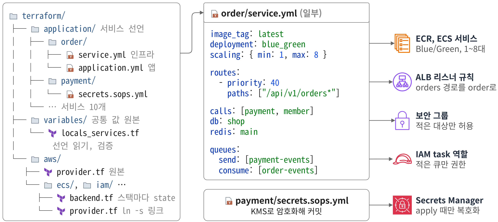
저장소 폴더 구조와 service.yml 한 파일에서 AWS 자원이 만들어지는 흐름
① service.yml 선언 하나로 서비스 인프라 생성
팀원이 application.yml로 매일 쓰던 YAML 형식으로 서비스마다 service.yml 하나만 작성
항목 이름은 보안 그룹, ALB 규칙 같은 AWS 용어 대신 routes, calls, queues, scaling처럼 서비스가 하는 일로 정의했습니다.
팀원이 묻지 않고도 작성할 수 있게 README에 필수 항목, 기본값, 항목마다 만들어지는 자원을 예시와 함께 정리했습니다.
선언한 내용은 모든 service.yml을 한곳에서 읽고 각 스택이 그 파일을 심볼릭 링크로 가져와 서비스마다 자원을 만들도록 구성했습니다.
# terraform/variables/locals_services.tf
# 모든 service.yml을 읽어 서비스 목록 생성
locals {
_service_raw = {
for f in fileset (
local.application_dir, "*/service.yml"
) :
dirname(f) => yamldecode (
file("${local.application_dir}/${f}" )
)
...
}
...
}# terraform/aws/ecs/nova_apnortheast2/services.tf
# 왼쪽 파일을 심볼릭 링크로 가져와 서비스마다 모듈 실행
module "service" {
# 직접 만든 모듈. ECS 서비스, 태스크 정의,
# ALB 규칙, 오토스케일링 생성
source = "../_modules/service"
# service.yml에서 읽은 서비스 목록
for_each = local.deployed_services
name = "${local.name_prefix}-${each.value.name}"
cpu = each.value.cpu
# service.yml의 routes가 ALB 리스너 규칙이 됨
routes = each.value.routes
...
}
왼쪽은 service.yml을 읽는 부분, 오른쪽은 읽은 값을 서비스마다 모듈에 넘겨 자원을 만드는 부분
② 잘못 적은 값을 plan에서 차단
apply 전 plan 단계에서 service.yml 값을 검사해 틀리면 아래처럼 어느 파일의 무엇이 틀렸는지 오류 메시지로 알려 주게 했습니다.
모르는 필드나 오타, 없는 호출 대상, 다른 규칙과 겹치는 ALB 우선순위, RDS 연결 한도를 넘는 최대 대수를 검사하게 했습니다.
# order의 service.yml에 scaling을 scalling으로 잘못 적은 경우
$ terraform plan
Error: ...
"application/order/service.yml — 모르는 필드 'scalling'" 오타를 넣은 service.yml로 plan을 실행한 출력에서 핵심 줄만 남겼습니다.
로컬 검증
Terraform 코드를 실제 AWS에서 바로 시험하면 요금이 들고 실수가 운영 환경에 그대로 반영되기 때문에 AWS 에뮬레이터 Floci를 활용해 로컬에서 먼저 apply 해 검증했습니다.
가짜 자격 증명으로만 연결해 실제 AWS 계정에는 적용되지 않게 했습니다.
스택마다 state를 로컬 파일로 두고 앞 스택의 출력을 이어 받아 VPC, 보안 그룹, ECR, IAM, ECS의 실제 순서대로 적용했습니다.
terraform validate는 통과하지만 실제로 apply하면 AWS가 거절하는 설정을 미리 찾아 고쳤고 calls와 routes대로 보안 그룹과 ALB 규칙이 생기는지 확인했습니다.
결과
팀원이 인프라 담당자를 거치지 않고 ALB 경로, 서비스 간 호출 허용, 큐 권한, 최소 대수를 service.yml과 PR로 직접 변경 했습니다.
NOVA · 02
Atlantis를 활용한 AWS 인프라 변경 관리
AWS 쓰기 권한은 Atlantis에만 팀원은 읽기 전용으로 plan까지 apply 성공 뒤에만 병합
설계 배경
7명이 AWS 계정 하나를 함께 쓰는데 콘솔이나 로컬에서 바꾸면 코드에 남지 않아 누가 무엇을 바꿨는지 알 수 없고 지우지 않은 자원에 요금이 계속 나가는 구조였습니다.
인프라를 바꾸는 경로를 하나만 두고 모든 변경이 PR에 남는 절차가 필요했습니다.
설계 판단
PR에서 plan과 apply를 실행하는 방법으로 GitHub Actions와 Atlantis를 비교했습니다.
필요한 기능 GitHub Actions Atlantis
PR에 plan 결과 표시 워크플로 직접 작성 PR을 열면 자동 plan 후 댓글 PR에서 apply 실행 직접 구현 apply 댓글로 실행 스택 잠금 직접 구현 plan한 PR이 병합될 때까지 잠금
GitHub Actions로는 apply와 스택 잠금을 따로 만들어야 해서 둘을 기본 제공하는 Atlantis를 택했습니다.
운영 방식
PR 하나로 plan, apply, 자동 병합이 이어지는 경로와 팀원의 읽기 전용 경로
① AWS 쓰기 권한을 Atlantis에만 부여
팀원에게는 콘솔과 로컬 모두 plan까지만 되는 읽기 전용 역할을 주고 쓰기 역할은 Atlantis에만 부여 했습니다.
② 바뀌는 스택만 plan하고 잠금
PR이 올라오면 Atlantis가 GitHub webhook을 받아 바뀐 스택만 plan 하고 결과를 PR 댓글로 남기게 했습니다.
공용 변수와 모듈이 바뀌면 그 파일을 읽는 스택까지 plan해 빠지는 스택이 없게 했습니다.
plan한 스택은 PR이 병합될 때까지 잠가 다른 PR의 apply 때문에 앞선 plan 결과가 달라지지 않게 했습니다.
③ plan을 통과한 PR만 순서대로 apply하고 병합
팀원이 PR에 apply 댓글을 달면 Atlantis가 적용하고 plan이 실패했거나 main과 충돌한 PR은 거절하게 했습니다.
ECS 서비스는 VPC와 보안 그룹이 먼저 있어야 하듯 스택 사이에 순서가 있어 Atlantis 설정 파일 atlantis.yaml에 스택마다 적용 순서를 적고 앞 스택이 실패하면 뒤 스택은 멈추게 했습니다.
병합을 먼저 하면 apply가 실패해도 main에 적용되지 않은 변경이 남기 때문에 apply가 모두 성공한 뒤에만 자동 병합 되게 하고 브랜치 보호 규칙으로 직접 병합도 막았습니다.
결과
모든 인프라 변경이 Atlantis에서만 PR을 거쳐 적용되어 누가 무엇을 바꿨는지 plan과 apply 결과와 함께 PR에 남았습니다 .
콘솔에서 따로 만든 자원이 없어 코드에 없는 자원이 요금으로 남지 않았습니다.
AWS 쓰기 권한 없이도 팀원이 PR 안에서 plan 확인부터 apply와 병합까지 직접 처리했습니다.
NOVA · 03
IAM Role과 OIDC를 활용한 AWS 권한과 비밀 값 관리
사람 · CI · 서비스마다 Role 분리 OIDC로 장기 액세스 키 없이 배포 비밀 값은 태스크 기동 때 주입
설계 배경
AWS 계정을 새로 만들면서 팀원, CI, 서비스가 AWS에 접근하는 방식을 정해야 했습니다.
액세스 키를 발급해 함께 쓰거나 비밀 값을 설정 파일에 평문으로 두면 한 번의 유출로 계정 전체가 노출 될 수 있어 장기 액세스 키와 평문 비밀 값이 없는 구조가 필요했습니다.
서비스가 같은 권한을 나눠 쓰면 하나가 뚫렸을 때 다른 서비스의 큐와 데이터까지 접근할 수 있어 서비스마다 권한을 나눠야 했습니다.
구현 방식
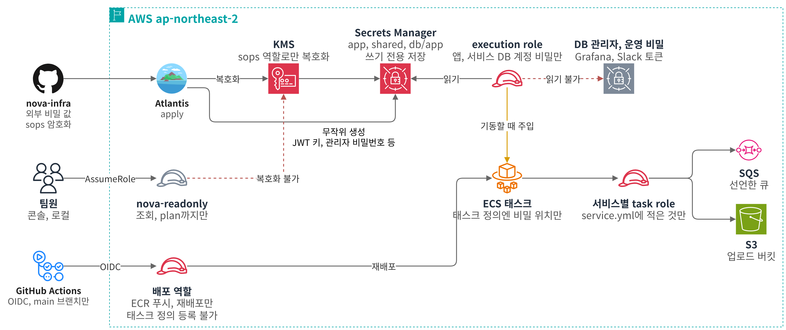
사람 · CI · 서비스가 받는 Role과 SOPS · KMS · Secrets Manager를 거쳐 기동할 때 주입되는 비밀 값
① 사람 · CI · 서비스마다 Role 분리
주체마다 Role을 아래처럼 나눴습니다.
주체 받는 권한
팀원 읽기 전용 Role, 콘솔과 로컬 모두 조회와 plan까지 Atlantis 인프라 변경 Role, IAM은 nova-로 시작하는 자원만 다루고 자기 권한 수정은 거부 GitHub Actions OIDC로 main 브랜치에서만 받는 배포 Role, ECR 푸시와 재배포까지 서비스 서비스마다 다른 Role, service.yml에 적은 큐와 업로드 버킷까지
GitHub Actions에는 액세스 키를 저장하지 않고 main 브랜치 워크플로가 실행될 때만 OIDC 토큰으로 배포 Role을 받게 했습니다.
Role과 비밀 값 위치가 들어 있는 태스크 정의는 CI에 등록 권한을 주지 않고 Terraform에서만 바꾸게 했습니다.
서비스를 추가하면 service.yml에 적은 자원만 허용하는 Role이 함께 만들어지게 했습니다.
② 비밀 값을 Secrets Manager에 넣고 태스크 기동 때 주입
외부에서 받은 비밀 값만 KMS 키로 SOPS 암호화해 Git에 두고 복호화는 Atlantis와 관리자 Role로 한정했습니다.
JWT 키, 서비스 공용 비밀, 관리자 비밀번호는 apply 때 무작위로 생성해 사람이 값을 보거나 전달하지 않게 했습니다.
복호화하거나 생성한 값은 Terraform state에 평문이 남지 않도록 state에 저장되지 않는 write-only 속성으로 넣었습니다.
태스크 정의에는 값 대신 비밀 값의 위치만 적어 ECS가 태스크를 띄울 때 읽어 환경변수로 주입하게 했습니다.
ECS가 비밀 값을 읽는 Role은 앱과 서비스 DB 계정 비밀만 읽고 DB 관리자, Grafana, Slack 같은 운영 비밀은 읽지 못하게 했습니다.
검증과 결과
선언하지 않은 큐와 버킷 접근, 운영 비밀 읽기, 읽기 전용 Role로의 변경을 직접 시도해 모두 거부되는 것을 확인 했습니다.
CI와 서비스가 실행할 때마다 임시 자격 증명을 받아 장기 액세스 키를 하나도 만들지 않고 운영 했습니다.
NOVA · 04
원인 분석을 수십 분에서 수 분으로 줄인 OpenTelemetry와 Grafana 통합 모니터링
지표 · 로그 · 트레이스를 한곳에 수집 요청 시작부터 DB까지 한 화면에서 추적 원인 분석 수십 분 → 수 분
설계 배경
지표는 CloudWatch에, 로그는 서비스마다 흩어져 있어 장애가 발생했을 때 둘을 오가며 원인을 찾는 데 수십 분이 걸렸습니다 .
한 요청이 여러 서비스를 거치는데 서비스별 로그만으로는 요청의 흐름을 이어 볼 수 없었습니다.
사용자 영향이 생기면 알림을 받고 요청 시작부터 DB까지 한 화면에서 따라갈 수 있는 구조가 필요했습니다.
구축 방식
앱, 브라우저, 엣지 로그가 OTel 게이트웨이를 거쳐 각 저장소에 모이고 Grafana 경보가 Slack으로 가는 구성
① 지표 · 로그 · 트레이스 · 프로파일을 한곳에 수집
OpenTelemetry Java Agent와 Pyroscope 확장으로 앱 코드 수정 없이 지표, 로그, 트레이스, 프로파일을 수집하고 브라우저 오류와 속도는 Faro RUM으로 모았습니다.
CloudWatch 대신 EC2 한 대에 Mimir, Loki, Tempo, Pyroscope를 올리고 S3에 저장해 Grafana 한곳에서 조회하게 했습니다.
트레이스는 오류와 느린 요청은 전부, 나머지는 일부만 저장 해 서버 부담을 줄이고 지표는 모든 요청으로 계산해 정확도를 유지했습니다.
② 사용자 영향에서 원인 순서로 대시보드 배치
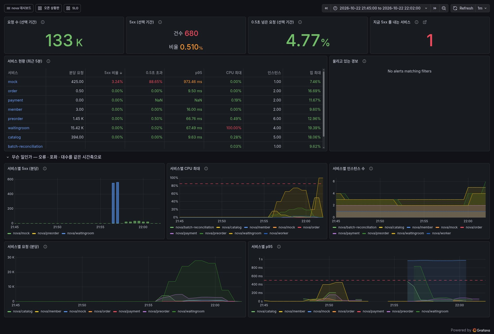
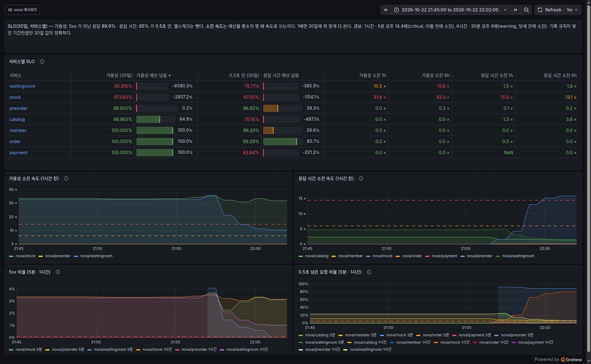
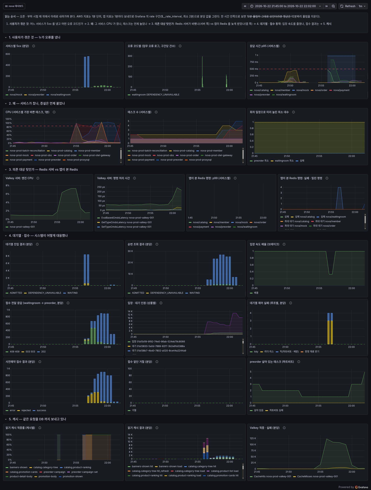
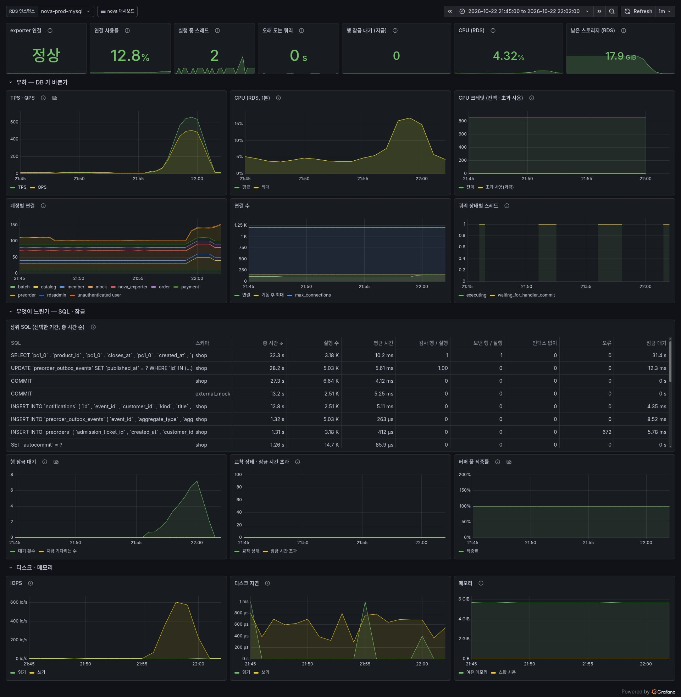
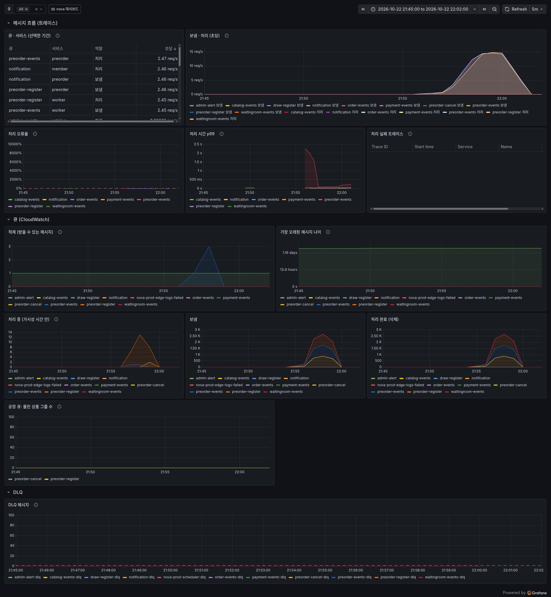
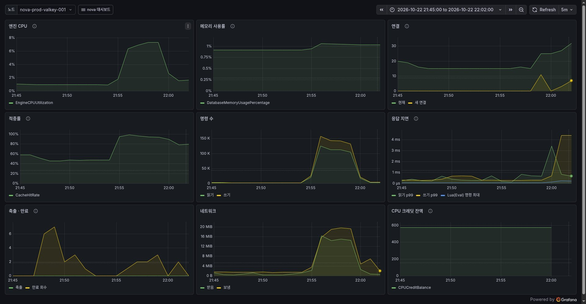
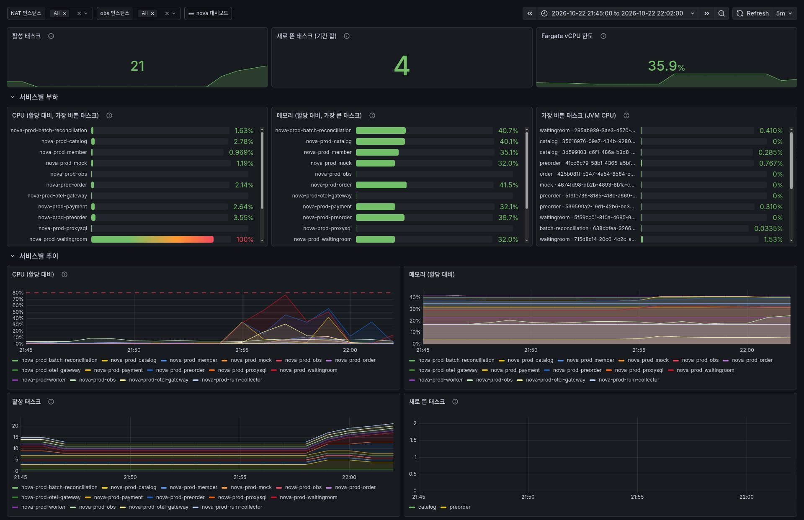
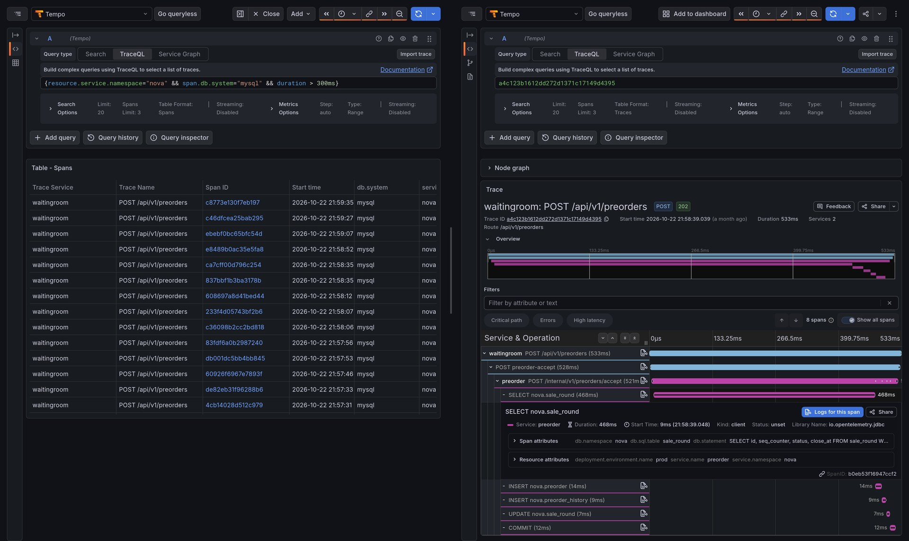
개요 화면은 사용자 영향을 맨 위에 두고 그 아래 서비스별 5xx, CPU, 인스턴스 수를 같은 시간축에 놓아 오류와 포화가 겹치는 시점을 비교할 수 있게 했습니다.
서비스 상세 화면은 위에서 아래로 원인을 좁혀 가는 순서로 두고 trace ID로 로그와 트레이스를 오가게 했습니다.
③ 사용자 영향이 있을 때만 critical 경보 발송
SLA와 SLO를 가상으로 정해 가용성 99.9%, 요청의 95%가 0.5초 안 을 기준으로 삼고 서비스별 5xx와 SLO 예산 소진처럼 사용자가 겪는 증상에만 critical 경보를 걸었습니다.
JVM 힙, DB 연결 사용률 같은 원인 지표는 warning으로 낮추고 수신처를 나눠 critical이 묻히지 않게 했습니다.
결과
여러 도구를 오가며 수십 분 걸리던 원인 분석을 Grafana 한 화면에서 요청 시작부터 DB까지 따라가 수 분으로 줄였습니다 .
부하 시험에서는 이 화면으로 아래 문제를 찾아 고쳤습니다.
찾은 문제 근거 조치
접수 응답 지연 경보에서 트레이스로 따라가 DB 행 잠금 대기 468ms 확인 잠금을 커밋 직전으로 옮겨 p50 521ms → 48ms 급증 뒤에야 붙는 증설 CPU와 경보 시각을 같은 시간축에서 비교해 약 3분 지연 확인 오픈 전 사전 증설로 변경 (05 사례 ) 대기열과 상품 조회 CPU 포화 서비스별 CPU 그래프에서 포화된 서비스 확인 태스크 사양과 최소 대수 상향 반복되는 배포 롤백 새 태스크가 CPU 부족으로 기동을 반복하다 롤백되는 것 확인 CPU 할당 조정
NOVA · 05
판매 오픈의 급증 트래픽과 큐에 쌓인 메시지에 맞춰 늘어나는 ECS Fargate 확장 구조
증설 6~10분 → 약 4분 30초 오픈 15분 전 사전 증설 worker는 큐에 쌓인 메시지 기준 확장 실패한 배포 자동 롤백
설계 배경
판매 오픈 때 대기열, 접수, 상품 조회에 트래픽이 몰리는데 CPU 목표 추적은 증설까지 6~10분 이 걸려 먼저 503이 발생했습니다.
worker 4대의 처리량 초당 128건이 입장 속도 150건보다 낮아 큐가 쌓이는데 CPU는 낮아 CPU가 아닌 확장 기준 이 필요했습니다.
판매 중 배포가 실패해도 서비스가 유지되도록 자동 롤백이 필요했습니다.
구조
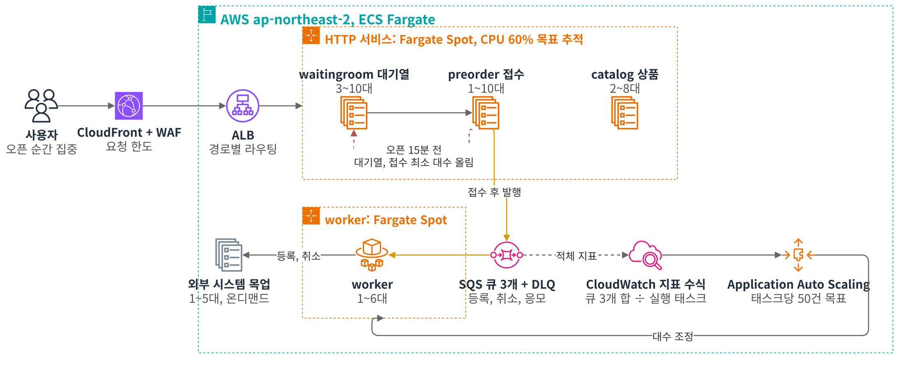
HTTP 서비스는 CPU와 오픈 전 사전 증설로, worker는 SQS에 쌓인 메시지로 늘어나는 ECS 구성
① HTTP 서비스는 CPU와 요청 수, worker는 큐에 쌓인 메시지 기준으로 확장
HTTP 서비스는 CPU 60% 목표 추적을 기본으로 두고 축소는 5분 간격으로만 하게 했습니다.
CPU나 태스크당 요청 수가 기준을 넘으면 1분 지표 1~2번만 보고 대수를 2~3배로 늘리는 Step Scaling을 추가했습니다.
worker는 큐 3개의 메시지 합을 태스크 수로 나눈 지표를 만들어 태스크당 50건 을 넘으면 늘어나게 했습니다.
② 오픈 전 사전 증설과 부하 시험으로 정한 값
Step Scaling을 더해도 증설까지 4분 넘게 걸려 사전예약 앱이 오픈 15분 전부터 대기열과 접수의 최소 대수를 올리게 했습니다.
항목 부하 시험에서 확인한 것 변경
대기열 최소 대수 1대가 10초에 5,000명 진입으로 CPU 포화 1대 → 3대 상품 조회 최소 대수 1대가 급증 트래픽에 CPU 포화 1대 → 2대 상품 조회 최대 대수 증설이 4대 상한에 바로 도달 4대 → 8대 대기열 Step Scaling 기준 태스크 한 대가 분당 6,000건에서 포화 분당 3,500건
③ 무중단 배포와 자동 롤백
ALB 뒤 서비스는 ECS Blue/Green으로 배포하고 이전 버전을 5분 남겨 바로 되돌릴 수 있게 했습니다.
모든 서비스에 deployment circuit breaker를 켜 새 태스크가 계속 실패하면 이전 버전으로 자동 롤백 되게 했습니다.
결과
6~10분 걸리던 증설을 약 4분 30초 로 줄였고 판매 오픈은 사전 증설로 증설을 기다리지 않게 했습니다.
항목 이전 이후
급증 뒤 증설까지 걸린 시간 CPU 목표 추적만으로 6~10분 Step Scaling 추가 뒤 약 4분 30초 오픈 첫 1분 p99 1대로 받은 대기열 11.9초, 5xx 142건 미리 3대로 늘린 접수 0.44초 worker 확장 기준 CPU, 큐가 쌓여도 늘지 않음 태스크당 큐 메시지 50건
CPU 부족으로 기동에 실패한 배포는 deployment circuit breaker가 이전 버전으로 자동 롤백했습니다.
NOVA · 06
목표 구조는 코드에 남기고 월 운영비를 73% 줄인 Terraform 변수 기반 비용 절감
월 운영비 약 $890 → $240 변수 하나로 목표 구조 원복 6주 예산 40만 원 안에서 운영
문제 발견
처음 설계한 목표 구조는 Multi-AZ, NAT Gateway, VPC 엔드포인트를 포함해 월 약 890달러 로 6주 예산 40만 원을 넘었습니다.
설계 자체를 낮추면 트래픽이 늘거나 예산이 생겼을 때 다시 만들어야 했습니다.
목표 구조를 버리지 않고 비용만 줄이는 방법이 필요했습니다.
1차 개선
NAT 방식, Multi-AZ, VPC 엔드포인트처럼 비용이 큰 항목을 nat_mode, multi_az, enable_interface_endpoints 같은 Terraform 변수로 분리 하고 기본값만 비용이 낮은 쪽으로 두었습니다.
목표 구조 코드는 그대로 남아 있어 변수 값만 바꾸면 목표 구조로 돌아가게 했습니다.
NAT 인스턴스를 교체하는 동안 그 AZ의 외부 통신이 끊기는 점처럼 항목마다 감수할 점과 목표 구조로 되돌리는 방법을 문서에 남겼습니다.
모니터링 스택은 CloudWatch 대신 EC2 한 대에 Mimir, Loki, Tempo, Pyroscope를 올리고 S3에 저장했습니다. (04 사례 )
배포 후 확인
전체 서비스를 배포한 뒤 하루 비용이 20달러 안팎 으로 예상보다 많이 나왔습니다.
Cost Explorer로 항목별로 나눠 보니 Fargate가 가장 컸고 Container Insights 지표 요금이 그다음 이었습니다.
2차 개선
Container Insights는 그 지표를 쓰던 곳을 아래처럼 먼저 옮긴 뒤 꺼 월 약 75달러 를 줄였습니다.
없어지는 지표 쓰던 곳 대체
실행 중 태스크 수 worker 확장 기준, 태스크 0개 경보 무료 AWS/ECS 지표 LiveTaskCount 모자란 태스크, 뜨는 중 태스크 Grafana 개요 ECS 이벤트 경보로 배포 실패, 배치 실패, 비정상 종료 알림 태스크 네트워크, 임시 스토리지 컴퓨팅 대시보드 판단에 쓰지 않던 지표라 대체하지 않음
Fargate는 부하 시험으로 트래픽을 감당하는 최소 대수와 사양을 찾아 접수는 2 vCPU에서 1 vCPU로, 외부 시스템 목업은 2대에서 1대로 낮췄습니다. (05 사례 )
부하 시험 리소스는 전용 ECS 클러스터에 모으고 평소에는 0대로 두어 시험할 때만 비용이 생기게 했습니다.
결과
월 약 890달러로 추정된 목표 구조를 월 약 240달러 로 73% 줄여 예산 안에서 운영했습니다.
항목 목표 구조 현재 운영 월 절감(추정)
Fargate 용량 서비스마다 온디맨드 1대 + 증설분 Spot 전부 Spot (외부 시스템 목업만 온디맨드) 약 160달러 VPC 엔드포인트 ECR, Logs, Secrets Manager, SSM 인터페이스형 제거하고 NAT 경유 (S3는 무료 게이트웨이형 유지) 약 130달러 RDS Multi-AZ (대기 인스턴스 포함) 단일 AZ (db.t4g.large) 약 120달러 Container Insights 켬 (태스크 단위 지표) 끔, 무료 AWS/ECS 지표와 이벤트 경보로 대체 약 75달러 NAT AZ별 NAT Gateway AZ별 NAT 인스턴스 (fck-nat t4g.micro) 약 70달러 + 처리 요금 Valkey 복제본 + 자동 장애 조치 노드 1개 약 20달러 기타 mock 2대 → 1대, preorder 2 vCPU → 1 vCPU, Atlantis 전용 ALB → 메인 ALB 공유, 엣지 로그 내부 NLB → DNS 레코드, Flow Logs 끔 약 75달러
월 절감액은 서울 리전 정가 기준 추정치입니다.
줄인 항목 대부분은 변수 값만 바꾸면 목표 구조로 돌아가 트래픽이 늘거나 예산이 생기면 절감액이 큰 항목부터 되돌릴 수 있습니다.
Project 03 · 개인 프로젝트
홈랩 Kubernetes 플랫폼
서버 두 대에 Kubernetes를 직접 설치해 운영하는 홈랩
HOMELAB · 01
서명 검증을 통과한 이미지만 배포되는 GitLab CI 구성
CI가 서명한 이미지만 배포 태그 대신 digest로 이미지 고정 앱이 늘어도 검증 CI 수정 없음
문제 발견
helm install로 직접 올린 컴포넌트는 언제 무엇이 바뀌었는지 이력이 남지 않았습니다 .
이미지를 태그로 참조해 같은 태그가 다른 이미지를 가리킬 수 있었고 CI를 거치지 않은 이미지가 들어와도 막을 방법이 없었습니다 .
CI가 빌드하고 서명한 이미지만 배포되게 해야 했습니다.
해결
앱 저장소 CI가 서명한 이미지를 GitOps 저장소 CI가 검증해 통과한 커밋만 release 브랜치로 옮기는 흐름
위치 단계 하는 일 신경 쓴 점
앱 저장소 CI 검사 lint와 타입 검사, 의존성 취약점 점검 high 이상 취약점이 있으면 실패 build 이미지를 빌드해 push하고 digest를 다음 잡에 전달 뒤 단계는 태그 대신 digest로 이미지 지정 sign 이미지에 cosign 서명, Trivy로 만든 SBOM 첨부 키 없이 GitLab CI의 OIDC 토큰 사용 bump GitOps 저장소의 이미지를 digest로 바꾸는 커밋 CI는 직접 배포하지 않음 GitOps 저장소 CI verify 매니페스트의 이미지마다 앱 저장소의 main 브랜치 CI가 한 서명과 digest 고정 여부 검사 서명 없음, 다른 서명자, 태그 참조는 실패 promote 검증을 통과한 커밋을 release 브랜치로 옮김 강제 push 없이 fast-forward만 허용 클러스터 Argo CD release 브랜치만 동기화 main 브랜치의 커밋은 검증 전까지 배포되지 않음
verify는 이미지 경로로 서명할 저장소를 알아내 앱이 늘어도 고치지 않게 했습니다.
build부터 promote까지는 GitLab CI/CD Component로 만들어 저장소마다 같은 잡을 include해 쓰게 했습니다.
취약점과 비밀 값 스캔은 GitLab 내장 템플릿을 썼습니다.
결과
경우 이전 이후
CI를 거치지 않은 이미지 그대로 배포 verify 실패, release 브랜치에 반영되지 않음 태그로 참조한 이미지 같은 태그가 다른 이미지를 가리킬 수 있음 verify 실패 다른 저장소가 서명한 이미지 구분하지 못함 verify 실패 롤백 되돌릴 이력 없음 git revert
남은 과제
클러스터에서 서명을 다시 검사하는 Kyverno는 아직 적용하지 않았습니다.
GitLab Free 티어라 Container Scanning과 Secret Detection은 리포트만 남기고 배포를 막지는 못합니다.
HOMELAB · 02
Hubble 통신 기록을 활용한 CNI 전환 중 DNS 장애 분석
Hubble에 기록이 없어 Cilium 밖의 문제로 판단 원인은 제거하지 않고 남은 calico-node Calico 제거로 DNS 복구
문제 발견
Calico 무료 버전은 도메인 단위 허용을 지원하지 않아 CNI를 Cilium으로 바꿨습니다.
전환한 날 Keycloak이 메일을 보내지 못했고 시험 Pod에서 메일 서버 도메인을 조회하면 timeout 됐습니다.
Redis Pod의 DNS 조회만 정상이었습니다.
원인 분석
① 메일 서버 도메인 허용 정책
전환한 날 넣은 정책을 먼저 의심해 지우고 다시 조회했지만 timeout이었습니다.
나중에 보니 Argo CD가 지운 정책을 몇 초 만에 되살려 정책이 있는 채로 시험한 것이었습니다.
② kube-proxy 설정
Pod 대역 설정 때문에 응답 경로가 어긋났는지 보려고 clusterCIDR을 확인했지만 빈 값이라 원인이 아니었습니다.
③ Hubble의 DNS 통신 기록
정상인 Redis는 요청과 응답이 모두 기록됐는데 실패한 Pod의 조회는 DROPPED 기록도 없었습니다 .
Cilium이 막았다면 기록이 남으므로 패킷이 Cilium에 닿기 전에 막힌다고 보고 정책 대신 노드를 조사했습니다.
$ kubectl -n kube-system exec <cilium-pod> -- hubble observe --port 53 --last 40
storage/redis-node-* → coredns to-endpoint FORWARDED (UDP)Hubble의 DNS 통신 기록 출력 일부
④ 노드의 Pod와 CNI 설정
Cilium 밖에서 패킷을 막는 것을 찾으려고 IP가 Cilium 대역이 아닌 Pod를 추렸더니 calico-node가 두 노드에서 실행 중 이었습니다.
Cilium도 다른 CNI와 함께 쓰는 전환 중 설정 그대로였습니다.
$ kubectl get pods -A -o wide | grep -v "10.244\."
calico-node-7h4jd kube-worker Running 15d
$ helm -n kube-system get values cilium | grep -A4 "cni:"
customConf: true
exclusive: false 노드에서 확인한 Pod와 Cilium 설정 출력 일부
원인
전환 절차의 마지막 단계인 Calico 제거가 남아 있어 calico-node가 두 노드의 iptables 규칙을 계속 다시 썼고 DNS 패킷이 Cilium에 닿기 전에 막혔습니다.
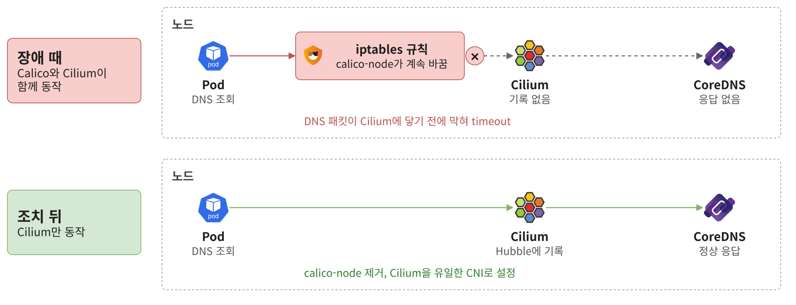
남아 있던 calico-node 때문에 DNS 패킷이 Cilium에 닿지 못하던 장애 때와 Calico를 제거한 뒤
조치
Calico를 제거하고 Cilium을 유일한 CNI로 설정했습니다.명령으로 바꾼 값은 Git의 values 파일에도 넣어 다음 upgrade에서 되돌아가지 않게 했습니다.
$ kubectl delete -f calico.yaml
$ helm upgrade cilium cilium/cilium -n kube-system -f bootstrap/cilium-values.yaml \
--set cni.customConf=false --set cni.exclusive=true
$ kubectl -n kube-system rollout restart ds/ciliumCalico를 제거하고 Cilium을 유일한 CNI로 설정한 명령
결과
항목 이전 이후
DNS 조회 Redis를 뺀 Pod에서 timeout 도메인 허용 정책을 둔 채로 정상 외부 메일 서버 허용 사설망을 뺀 모든 주소 메일 서버 도메인 하나
배운 점
CNI를 바꿀 때는 이전 CNI를 지우는 단계까지 끝낸 뒤에 동작을 확인합니다.
Argo CD가 관리하는 리소스를 지워 시험할 때는 시험 Pod를 먼저 띄워 두고 지웁니다.
Hubble에 차단 기록이 없으면 정책보다 노드를 먼저 봅니다.
HOMELAB · 03
디스크가 남았는데도 볼륨이 만들어지지 않던 Longhorn 스토리지 장애 해결
Pod 이벤트에서 볼륨 · 노드 · 디스크 순으로 추적 원인은 root 파티션만 등록된 Longhorn 디스크 /home 파티션 추가로 볼륨과 Pod 복구
문제 발견
Prometheus, Alertmanager, Kafka Pod가 Pending과 ContainerCreating에서 멈춰 시간이 지나도 Running이 되지 않았습니다.
원인 분석
① Pod 이벤트
Pod 이벤트에 볼륨을 붙이지 못했다는 경고가 반복돼 애플리케이션이 아니라 볼륨 문제 로 봤습니다.
$ kubectl -n monitoring describe pod prometheus-...-0 | tail -20
Warning FailedAttachVolume volume pvc-... is not ready for workloadsPod 이벤트 출력 일부
② Longhorn 볼륨 상태
정상이 아닌 볼륨만 추려 보니 새 볼륨들이 어느 노드에도 붙지 못한 faulted 상태 였습니다.
$ kubectl -n longhorn-system get volumes.longhorn.io -o custom-columns=\
'VOL:.metadata.name,STATE:.status.state,ROBUST:.status.robustness,NODE:.status.currentNodeID,SIZE:.spec.size'
VOL STATE ROBUST NODE SIZE
pvc-87ab... detached faulted <none> 5Gi
pvc-289b... attached degraded kube-worker 10GiLonghorn 볼륨 상태 출력 일부
③ 노드 상태
Longhorn에서 본 두 노드는 모두 Ready였고 볼륨 배치도 가능해 노드 장애는 아니었습니다.
④ Longhorn이 쓰는 디스크와 실제 디스크
Longhorn 데이터 경로는 70GB root 파티션 에 있었고 같은 디스크의 391GB /home 파티션은 비어 있었습니다 .
$ df -h /var/lib/longhorn
/dev/mapper/rl-root 70G 25G 46G 36% /
$ lsblk
nvme0n1 476.9G
├─ rl-root 70G /
└─ rl-home 391G /homeLonghorn 데이터 경로의 파티션과 노드의 디스크 출력 일부
⑤ 지워지지 않고 남은 볼륨
재설치하며 지운 옛 Kafka와 Redis의 볼륨이 Released 상태로 남아 root 파티션을 차지하고 있었습니다.
원인
Longhorn이 쓸 수 있는 공간이 노드마다 root 파티션 70GB 뿐이었습니다.
복제본 2개를 서로 다른 노드에 둬야 하는데 옛 볼륨까지 남아 두 노드 모두 자리가 없어 새 볼륨이 faulted가 됐습니다.
root 파티션만 쓰던 장애 때와 /home 파티션을 디스크로 추가한 조치 뒤의 Longhorn 디스크 구성
조치
두 노드의 /home 파티션을 Longhorn 디스크로 추가 하고 root 파티션에는 새 볼륨이 배치되지 않게 했습니다.
Released로 남은 옛 볼륨과 faulted 볼륨을 지우고 PVC를 다시 만들었습니다.
자체 복제를 하는 Kafka는 복제본 1개에 회수 정책이 Delete인 StorageClass를 따로 만들어 옮겼습니다.
결과
항목 이전 이후
Longhorn 디스크 노드마다 root 파티션 70GB 노드마다 /home 파티션에서 약 180GB 새 볼륨 faulted 정상이 아닌 볼륨 없음 Prometheus, Alertmanager, Kafka Pod Pending, ContainerCreating Running
배운 점
Longhorn을 설치할 때는 쓸 디스크를 직접 지정합니다.
재설치가 잦은 볼륨은 회수 정책을 Retain 대신 Delete로 둡니다.
↑ 맨 위로